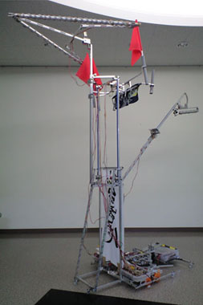
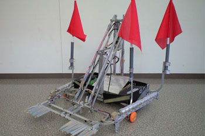

騎槍天鎧

07年度マシン、読み方は「キソウテンガイ」。合体専用機。
グスタフと合体することで2メートル級になります。
大型機を相手にするために設計されています。
合体時、グスタフの旗受けを引っ掛けマシンの最上部まで持ち上げる機構があります。
東北大会ではこの旗受けが落下し大打撃を受けてしまいました。
アームはローラー式でV型に装備しています。
これは特攻することを意識しており、
敵に高速で飛び込み旗を取る作戦がありました。
Gustav

クレーン型のアームを装備している、合体・単騎両用機。
大・中・小型機を相手する汎用機。
クレーンの先にローラー型アームを装備しています。
合体時は後方から来る敵を退けつつ、
アームを伸ばし高い位置の旗を狙えます。
単騎の場合重量バランスから合体時ほどアームを伸ばすことはできないため中型・小型用機になります。
万華鏡

小型・中型機を相手にする、
合体せず単騎で戦うロボットです。
エアシリンダーを多く使っているのが特徴。
先端についている棘で旗を挟み込み、
エアーで持ち上げます。
また、エアーで左右のローラー型アームを展開し広範囲への対応も可能です。
すれ違いざまに展開することで不意をつく作戦がありました。
展開時の画像